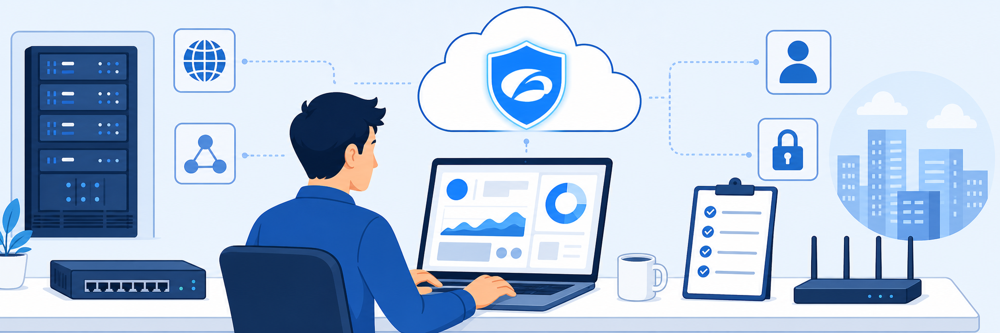

Lab 1: Environment Setup
Scenario: In this lab, you connect to CloudShare, start all virtual machines (VMs), and familiarise yourself with the sign-in options and the clipboard copy/paste features. You also make sure your keyboard is mapped appropriately for your locale.
- Connect to CloudShare and start all VMs.
- Use the sign-in and clipboard copy/paste features in the lab portal.

- Locate the CloudShare lab URL. Your unique CloudShare lab URL and passphrase are displayed on the classroom screen at the start of the session. Note them carefully: you need them to access your lab environment. (Example:
https://use.cloudshare.com/…) - Access the lab login page. Open a web browser and go to the CloudShare lab URL displayed on the classroom screen.
 CloudShare Class Login page.
CloudShare Class Login page. - Enter your credentials. On the login page, enter the email address and passphrase provided in your invitation email, then select Login.
 Enter your email address and passphrase, then select Login.
Enter your email address and passphrase, then select Login. - Review the lab overview. After you sign in, you are taken to the lab environment dashboard. The virtual machines may take a few minutes to provision and become ready for use.
- Navigate to the VM List. In the Overview tab, select Go to my VM List to open the Virtual Machines (VM) List tab. Alternatively, select the VM you need from the tabs at the top.
- Verify the VM is running. Once started, the virtual machine's tab displays its active running state, confirming that the environment is ready for use.
- Use the clipboard feature in the lab interface. To copy text from your host or this lab guide into the VM:
- Open the Actions tab and choose Send Text.
- Paste the text into the text box and select Send.
- Open the Lab Guide. Select the Lab Guide tab to open the hands-on lab guide. The guide opens in a new browser tab and gives detailed instructions for the lab exercises.
- Find your credentials. To see the Zscaler tenant and Solutions Demo Center (SDC) credentials for the lab, select the Credentials tab in the left panel.
Note: As the Credentials panel says, ZIdentity may prompt you to change the password the first time you sign in.
In this task, you sign in to Corp Client PC 1 and authenticate to the Experience Center console (console.zscaler.com).
Note: Throughout this lab guide, <Student FQDN> represents the domain assigned to your pod. For example, for Student ID zs000834 with fully qualified domain name (FQDN) zs000834.labtenant.com, student@<Student FQDN> becomes student@zs000834.labtenant.com.
- Log in to Corp Client PC 1 as the local Student user:
- Launch Corp Client PC 1 from the CloudShare portal.
- Open the Actions tab and select Send Password.
- In a browser window, open
console.zscaler.com. - Authenticate with your student admin account:
- Username:
student@<Student FQDN> - Password: <Session Password> (as provided in your Lab Access Instructions)
- Select Sign in.
- Username:
- Once signed in, explore the Experience Center dashboard by opening the different options and products in the left menu: Analytics, Administration, Internet Access, Private Access, Cyberthreat Protection, Digital Experience, Data Security, Infrastructure, Zero Trust Cloud, Zero Trust Browser, Data Explorer, AI Security and Service Portal.
 Experience Center (new navigation): every product area is in the left menu.
Experience Center (new navigation): every product area is in the left menu. - Use the Search option to navigate to the required feature in the Experience Center tenant assigned to you.
 Search menu: type a feature name to jump straight to it.
Search menu: type a feature name to jump straight to it.
Note: Use the Search menu to quickly navigate to the features you need in the upcoming lab tasks. Each lab step names the term to search for, followed by the menu path in brackets.